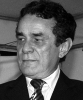

Foi Relações Públicas da Prefeitura de Goiânia entre 1966 e 1969, no governo Iris Rezende. Atuou como deputado estadual por Goiás em dois mandatos (1983–1987 e 1987–1991) e também foi suplente de senador pelo Tocantins, tendo assumido o cargo temporariamente. Totó teve papel importante na criação do Estado do Tocantins, sendo coautor do artigo constitucional que estabeleceu o novo Estado. Como parte de sua luta pela emancipação, realizou uma greve de fome que ganhou destaque nacional. Também articulou a moção de apoio da Assembleia Legislativa de Goiás, fundamental para consolidar o projeto de criação do Tocantins.
